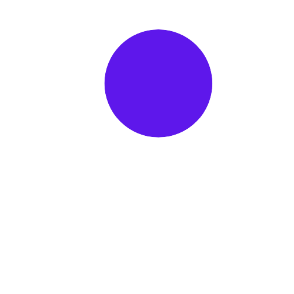
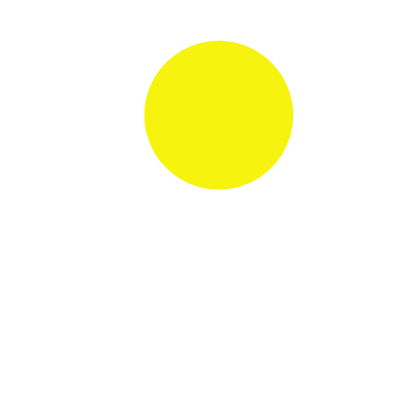

PRIMARY COLOR
They are the source of all other colors. Secondary colors are mixed from two primary colors adjacent to each other on the color wheel. The secondary colors are orange, green and violet.

